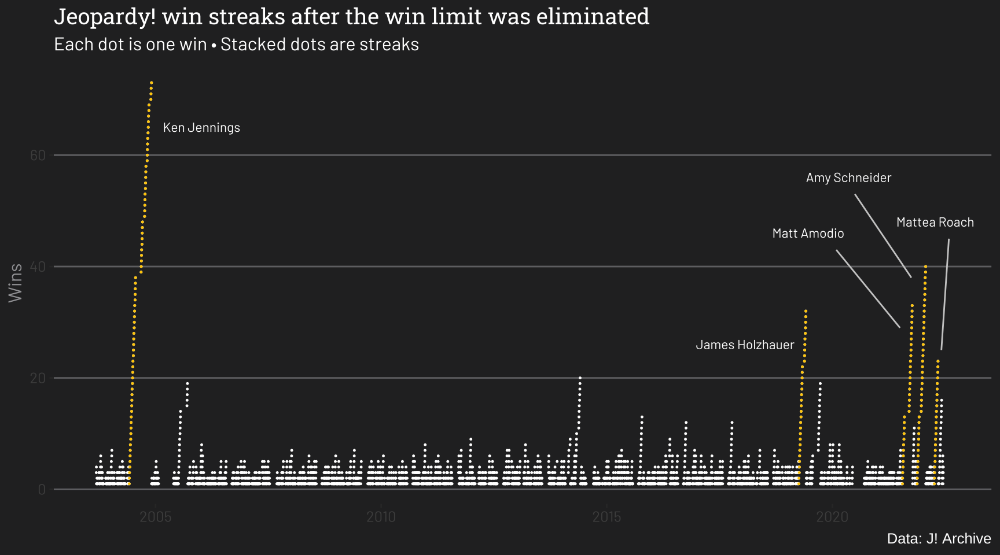
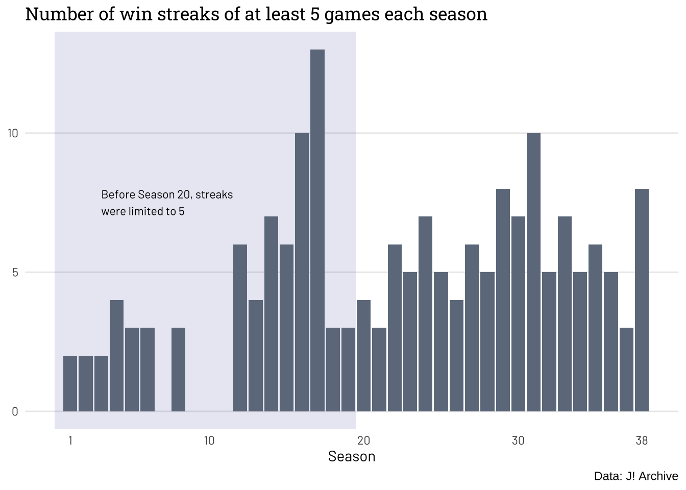
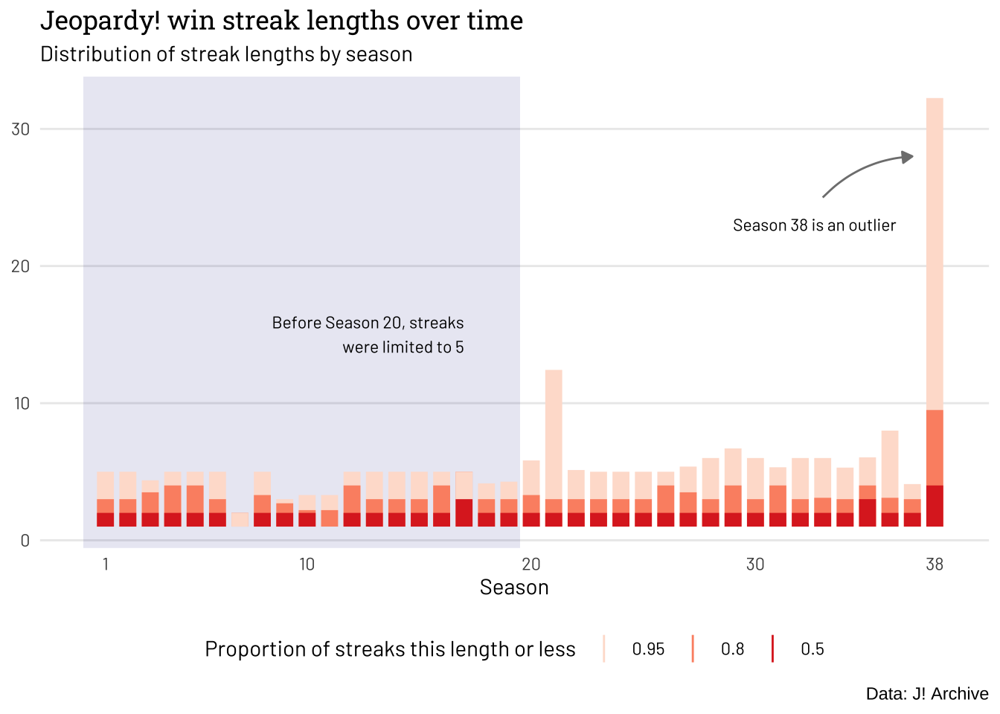

Are win streaks on Jeopardy becoming more common?
Aside from a recent outlier season, probably not.
Data Analysis
A recent unprecedented run of winning streaks on Jeopardy has led some to wonder whether something about the show or the contestants has changed. But is there anything in the data to suggest that this is an actual trend? Looking at data from all 38 seasons points to the recent run of streaks more likely being an outlier than part of a trend.
Three of the top five longest winning streaks in Jeopardy history have happened during the show’s current 38th season. This has led some to wonder whether there has been some kind of paradigm shift in how Jeopardy is played.
It’s possible the answer is yes, but it would be a little surprising for it to happen so suddenly. If something about the game or how people play it were changing, it’s more likely that you’d find changing trends over time.
I collected Jeopardy win data from every episode from J! Archive, an unofficial database of questions and outcomes from the show, to see if I could find any trends.
(Collecting and organizing this data turned out to be trickier than I expected. I’ll say a bit more about that later, but you can skip ahead if you’re interested.)
I’ll get right to the point. Is there any evidence of more streaks over time? Not really.
First, let’s look at the streaks.
This plot starts with Season 20, after a five-win limit was eliminated (shortly after, Ken Jennings began his record-setting run). I’ve highlighted the top five longest streaks. It’s easy to see why the latest cluster at the far right might raise some eyebrows. But is it the tail end of a trend?
Let’s look at the number of “long” win streaks over time. I defined a long streak as at least five consecutive wins (the limit when the show began).

From the plot, it looks like maybe there has been a slight increase in long streaks in the past ~15 seasons, but it’s hard to argue there is a recent uptick (barring Season 38).
What about streak length? The plot below shows the distribution of streak lengths for each season.

This plot can be a little confusing at first. Each bar includes most of the win streaks for a season. The darkest shade includes 50% of the win streaks, the medium shade includes 80% of the win streaks, and the lightest shade includes 95% of the win streaks.
This plot clearly shows that the most recent season is an extreme outlier. Excluding Season 38, it’s hard to see a clear increasing trend in average streak length, aside from the fact that win streaks got a little longer after the win limit was eliminated.
James Holzhauer, one of the show’s record-holders, doesn’t think the recent run of streaks is meaningful: “People always assume everything is a paradigm shift … when it’s actually fairly normal for results to occasionally cluster.” I think the data support his interpretation.
The data
J! Archive is an amazing resource, but it’s really designed for human readers to review individual games, not for computers to download massive amounts of data. I ran into a few difficulties with the way the data was formatted in J! Archive. I’ll share a couple of them partly for interest and partly so that if anyone decides to use my data, they will understand it may contain some errors.
Contestant names
Each game page includes full contestant names at the top of the page and “nicknames” (usually first names – the names that show up on people’s screens on Jeopardy) at the bottom of the page with the final scores.
This created a challenge because while there is almost certainly only one “James Holzhauer” to compete on Jeopardy, there’s definitely not one “James” to ever compete on Jeopardy.
To figure out streaks, it was helpful to first assign a unique identifier to each contestant, like their full name. Then I could figure out which James won or lost each game.
In most cases, I could just compare the “nicknames” to the full names and look for a match. But some people named James go by Jim, for example, and in those cases, a direct match won’t work. So I had to manually add a bunch of special cases shown below.
find_full_contestant_name <- function(contestant_list, nickname) {
# Remove all non-alpha characters
#(except for hyphen, period, apostrophe, and internal spaces)
n <- str_remove_all(nickname, "[^a-zA-Z\\-.' ]")
n <- str_trim(n)
# I've hard-coded some nicknames here to take care of hard cases in the data
if (n == "Mike") {
n <- "(Mike|Michael)"
}
else if (n == "Dave") {
n <- "(Dave|David)"
}
else if (n == "Tom") {
n <- "(Tom|Thomas)"
}
else if (n == "Dottie") {
n <- "(Dottie|Dorothy)"
}
else if (n == "Ernie") {
n <- "(Ernie|Ernest)"
}
else if (n == "Charlie") {
n <- "(Charlie|Charles)"
}
else if (n == "Ray") {
n <- "(Ray|Arthur)"
}
else if (n == "Sandy") {
n <- "(Sandy|Sandra)"
}
else if (n == "SSGT Paul") {
n <- "Paul Croshier"
}
else if (n == "DJ") {
n <- "(DJ|David)"
}
else if (n == "Sparky") {
n <- "(Sparky|John)"
}
else if (n == "Air Rob") {
n <- "(Air Rob|Rob)"
}
else if (n == "BobCat") {
n <- "(BobCat|Bob)"
}
else if (n == "MaryBeth") {
n <- "(MaryBeth|Mary Beth)"
}
else if (n == "zgn") {
n <- "Ozgun"
}
else if (n == "Julin") {
n <- "Julián"
}
else if (n == "Franois") {
n <- "Francois"
}
else if (n == "Rene" || n == "Renée") {
n <- "(Rene|Renée)"
}
else if (n == "Rb") {
n <- "Røb"
}
else if (n == "Dr. Oz") {
n <- "Dr. Mehmet Oz"
}
else if (n == "Desire") {
n <- "(Desirée|Desire)"
}
else if (n == "Frdrique") {
n <- "Frédérique"
}
else if (n == "Genevive") {
n <- "Geneviève"
}
else if (n == "Nio") {
n <- "Niño"
}
else if (n == "Steve-O") {
n <- "Steven"
}
else if (n == "Csar") {
n <- "César"
}
else if (n == "Sebastin") {
n <- "Sebastián"
}
else if (n == "Nadge") {
n <- "Nadège"
}
else if (n == "Andrs") {
n <- "Andrés"
}
else if (n == "Ramn") {
n <- "Ramón"
}
else if (n == "Anglica") {
n <- "Angélica"
}
# Cycle through all names in contestant list and look for a match
for (c in contestant_list) {
if (!is.na(str_match(str_to_lower(c), str_to_lower(n))[1])) {
return(c)
}
}
# No matches found
print(paste(contestant_list[1],
contestant_list[2],
contestant_list[3], n,sep = ","))
stop("Error: find_full_contestant_name found no name matches.")
}A number of the special cases were to match names that contained characters that I had stripped away at the beginning (which I did because I found a contestant whose nickname was in the archive as “Jen :)”)
Interrupted streaks
Jeopardy occasionally runs special events like tournaments or college championships that are scheduled in advance and interrupt regular play. When identifying streaks, I had to skip past these events somehow.
Luckily, J! Archive includes a “comments” field at the top of every page with notes about each episode like whether it was a tournament. So again, I used a brute-force approach, matching the contents of the comments field to a list in order to filter out all these special events.
The difficulty, yet again, was figuring out how many different special events there were (I’m still not sure I caught them all). Here’s the snippet of code where I tried to exclude tournaments, championships, kids weeks, celebrity Jeopardy, and more.
streaks_by_season <- j_data |>
filter(is.na(str_match(str_to_lower(comments), "tournament"))) |>
filter(is.na(str_match(str_to_lower(comments), "championship"))) |>
filter(is.na(str_match(str_to_lower(comments), "battle"))) |>
filter(is.na(str_match(str_to_lower(comments), "all-star"))) |>
filter(is.na(str_match(str_to_lower(comments), "celebrity"))) |>
filter(is.na(str_match(str_to_lower(comments), "kids"))) |>
filter(is.na(str_match(str_to_lower(comments), "week"))) |>Code
The full analysis code I used to generate these plots is available here.